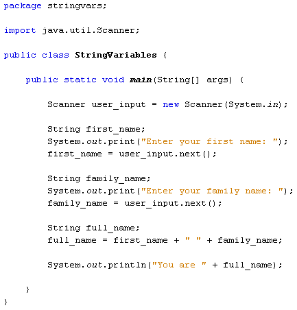
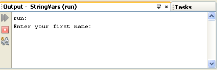
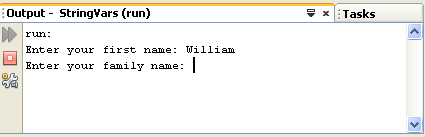
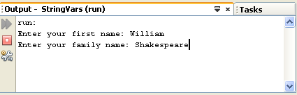
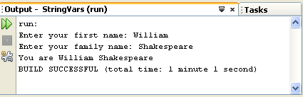

One of the strengths of Java is the huge libraries of code available to you. This is code that has been written to do specific jobs. All you need to do is to reference which library you want to use, and then call a method into action. One really useful class that handles input from a user is called the Scanner class. The Scanner class can be found in the java.util library. To use the Scanner class, you need to reference it in your code. This is done with the keyword import.
import java.util.Scanner;
The import statement needs to go just above the Class statement:
import java.util.Scanner;
public class StringVariables {
}
This tells java that you want to use a particular class in a particular library - the Scanner class, which is located in the java.util library.
The next thing you need to do is to create an object from the Scanner class. (A class is just a bunch of code. It doesn't do anything until you create a new object from it.)
To create a new Scanner object the code is this:
Scanner user_input = new Scanner( System.in );
So instead of setting up an int variable or a String variable, we're setting up a Scanner variable. We've called ours user_input. After an equals sign, we have the keyword new. This is used to create new objects from a class. The object we're creating is from the Scanner class. In between round brackets we have to tell java that this will be System Input (System.in).
To get the user input, you can call into action one of the many methods available to your new Scanner object. One of these methods is called next. This gets the next string of text that a user types on the keyboard:
String first_name;
first_name = user_input.next( );
So after our user_input object we type a dot. You'll then see a popup list of available methods. Double click next and then type a semicolon to end the line. We can also print some text to prompt the user:
String first_name;
System.out.print("Enter your first name: ");
first_name = user_input.next( );
Notice that we've used print rather than println like last time. The difference between the two is that println will move the cursor to a new line after the output, but print stays on the same line.
We'll add a prompt for a family name, as well:
String family_name;
System.out.print("Enter your family name: ");
family_name = user_input.next( );
This is the same code, except that java will now store whatever the user types into our family_name variable instead of our first_name variable.
To print out the input, we can add the following:
String full_name;
full_name = first_name + " " + family_name;
System.out.println("You are " + full_name);
We've set up another String variable, full_name. We're storing whatever is in the two variables first_name and family_name. In between the two, we've added a space. The final line prints it all out in the Output window.
So adapt your code so that it matches that in the next image:

Run your programme until your Output window displays the following:

Java is now pausing until you enter something on your keyboard. It won't progress until you hit the enter key. So left click after "Enter your first name:" and you'll see your cursor flashing away. Type a first name, and then hit the enter key on your keyboard.
After you hit the enter key, java will take whatever was typed and store it in the variable name to the left of the equals sign. For us, this was the variable called first_name.
The programme then moves on to the next line of code:

Type a family name, and hit the enter key again:

The user input has now finished, and the rest of the programme executes. This is the output of the two names. The final result should like this:

So we used the Scanner class to get input from a user. Whatever was typed was stored in variables. The result was then printed to the Output window.
In the next part, we'll take a brief look at Option Panes.